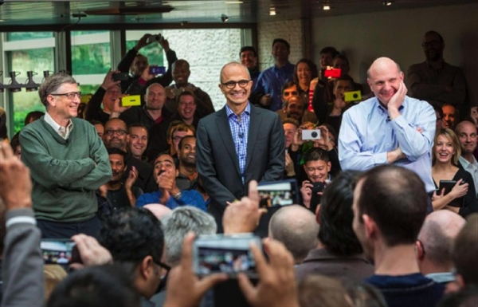

刚刚读完了微软CEO萨提亚·纳德拉的《刷新》，记下一些片段和感受。
关于纳德拉
萨提亚·纳德拉是微软的第三任CEO，前面两任分别是比尔·盖茨和史蒂夫·鲍尔默。
在错失了移动互联网时代之后，微软一度迷失了方向。然而，在2014年2月萨提亚·纳德拉被任命为CEO后，近几年微软发生了翻天覆地的变化。纳德拉重新发现了微软的灵魂，由内而外修复了公司的文化，帮助微软重新找回使命感。如今，在进入云计算、人工智能领域后，微软的市值一路上涨，与苹果、谷歌等公司并驾齐驱。那么，纳德拉是如何通过自我刷新带领微软这头大象起舞的呢？拥抱同理心、培养“无所不学”的求知欲、建立成长型思维尤为重要。
每一个人、每一个组织乃至每一个社会，在到达某一个点时，都应点击刷新——重新注入活力、重新激发生命力、从新组织并重新思考自己存在的意义。
同理心
什么是同理心呢？20多年前纳德拉在参加微软的面试时有这样一段对话。
“如果你看到一个婴儿在马路上哭，你会怎么做？”
“拨打911。”
“小伙子，你需要更有同理心。如果一个婴儿躺在马路上哭，你应该把这个婴儿抱起来。”
同理心是一种能够了解、预测他人行为和感受的社会洞察能力。
纳德拉表示，要将同理心置于所追求的一切的中心，从发布的产品到新进入的市场，再到员工、客户和合作伙伴。
纳德拉认识到，只有经历过人生起伏，才能培养起同理心。要想不受苦受难，或者少受苦受难，就必须接纳无常。如果你能够深刻地体会无常，那么你会获得更多的宁静，你不会因为人生中的起起落落而反应过于激烈。而只有到那时，你才能对周围的事物产生深深的同理心和慈悲心。
我们要学会以同理心面对生命中遇到的每一个人。对残疾人抱以同理心，对贫困地区的人民抱以同理心，对受到疫情灾难的人抱以同理心。在产品设计和软件开发方面也是如此，站在对方的角度，换位思考，真正感受客户需要的是什么。
成长型思维
人的思维模式有两种，即固化思维和成长型思维。具备成长型思维的人内心更加强大，他们认为挑战有助于自己的成长，即使遇到挫折也不会否定自己，而是把失败当成一种经验，从这个过程中学习并取得进步。
微软和其他竞争对手建立合作关系，互利共赢，一起把蛋糕做大，也是一种成长型思维的体现。
固化型思维会限制你的发展，而成长型思维则会推动你前进。先天条件只是一个起点。激情、努力和训练才能帮助你快速进步。
微软的文化变革并不依赖于我个人，甚至也不依赖于和我最密切共事的那几位高层管理者。它依赖于公司中的每一个人，包括我们广大的中层经理，他们必须致力于让每一个人每一天都能取得进步。
三大变革
混合现实、人工智能和量子计算，将在未来塑造我们的行业和其他领域。这些技术会给我们的经济和社会带来巨大变化。
这些即将到来的技术变革如何融合？一个思考方法是这样的：我们正在借助混合现实技术构建终极的计算体验，在这种体验中，你的视野成为一个计算面，将数字世界和你所在的物理世界合二为一。你认为只存在于手机或平板电脑上的数据、应用，甚至同事、朋友，现在都可以在你希望的任何地方——无论是在办公室里工作还是出门拜访客户，抑或在会议室里与同事协作。人工智能为我们的每一种体验提供动力，以人类自身无可企及的洞察力和前瞻性来增强人类的能力。最后量子计算可以改变当今计算机所以来的物理学原理，让我们得以突破“摩尔定律”的局限，提供足够的计算能力来帮助我们解决世界上最庞大、最复杂的问题。
混合现实、人工智能和量子计算现在似乎相互独立，但它们将会融为一体。
信任等式
这些广受关注的事件——索尼、斯诺登、圣贝纳迪诺和爱尔兰数据中心——制造的困境是保护个人的隐私和言论自由与公共安全等公民社会要求之间的冲突。这种冲突造成一种道德困境，或者说伦理困境。
隐私与安全困境最终的解决办法，是确保彼此的信任，但这绝非易事。客户必须相信我们会保护他们的隐私，但我们必须向他们坦白在什么法律环境下，我们无法保护他们的隐私。同样，公职官员必须相信我们靠得住，会帮助他们保护公共安全，只要保护个人自由的规则清楚明了并且得到了一致的遵守。构建和维持这两种信任，在个人和公共责任之间找到平衡，向来是制度进步的重要特征。但这也许更多的是一门艺术，而非科学。
同理心 + 共同的价值观 + 安全可靠 = 信任
人人获益的经济增长
在许多发展水平欠佳的地方，公众和个体的注意力都集中在吸引硅谷公司，而不是培育当地的科技企业家。由于政府未能鼓励社会各界迅速而密集地使用新技术，导致富国与贫国之间的经济不平等趋势有增无减。
全局最大值，就是引入最新的世界级技术，促进所在国家或地区的创业者进行创新和成长，在这个社区的各领域、各部门深度推动这些创新技术的出口和在本地的消费。换句话说，应该聚焦在增加价值和扩大技术的使用范围上，从而为越来越多的公民创造红利和机会。这意味着，无论是发达国家还是发展中国家，每个地区都必须利用新的技术投入来发展具有比较经济优势的行业。
教育加创新，广泛应用于整个经济，尤其是那些具备比较优势的国家或地区，再乘以科技使用强度，久而久之，就会产生经济增长和生产力。
∑ （教育 + 创新） x 科技使用强度 = 经济增长

2014年2月4日上午，微软第三任首席执行官与公司员工见面。